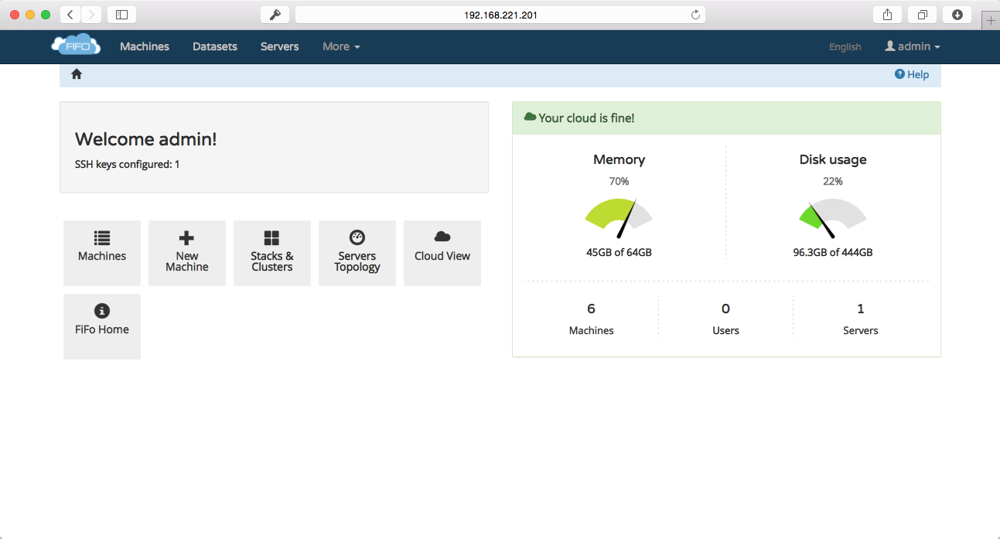

SmartOS Documentation : SmartOS GUI Remote Management
This page last changed on Jul 22, 2016 by cjr.
View Source

(v 0.6.0 image)
If you want to use SmartOS with more then one person or are just "consolophobe" there is a partial solution, project fifo. Lets go through it to to see what you can get out of it:
Project FIFO - A SmartOS GUI Management Suite.
Try it out
The current version is 0.6.0, it is pretty easy to use.
Features (of Project FIFO)
- Creating / deleting VM's.
- Starting / Stopping VM's.
- Resizing and updating VM's including adding/removing NICs.
- Snapshot creation and rollback.
- Automated IP pool management.
- noVNC integration - you can fully interact with KVM vm's through the browser.
- Zone Console support - you acces zone consoles form the browser.
- Detailed rights management.
- Multi-Node management with auto discovery
- REST based API
- DTrace analytics
- live hypervisor and VM metrics
- Integrated dataset/image management including image creation
- SNMP Monitoring of the system
- SSH Key management
- Yubikey support for MFA
- console client
- LeoFS integration for backups of machines and image storage, including the posibilitie to restore on different hypervisors (migration of VMs).
- Multi datacenter support by syncronizin authentication data.
- Build to be fault tollerant and highly available.
Preview
Installation steps
Please look at the official installation manual and the https://docs.project-fifo.net/.
{kind=link}
{kind=link}
{kind=link}
{kind=link}
{kind=link}
{kind=link}